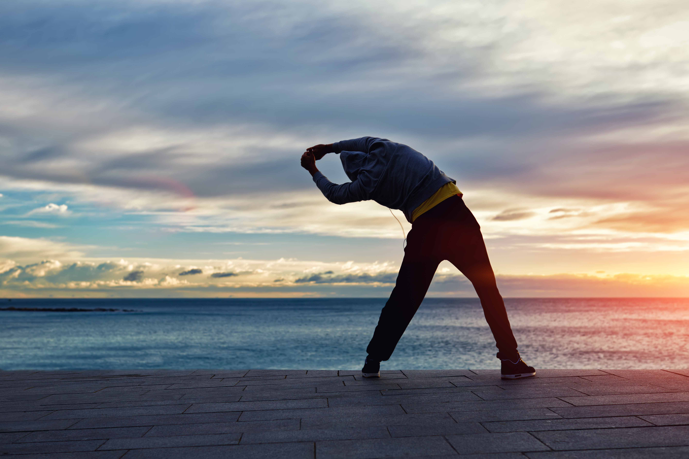

الحفاظ على النشاط للاستمتاع بالحياة
إنه لمن الأهمية بمكان أن تفهم كيف يتغير تكوين جسمك بمرور الوقت (على سبيل المثال: انخفاض كتلة العضلات وقوتها مع النقصان الناجم عن معدل الأيض الأساسي، ومستوى النشاط، واستهلاك الطاقة عندما تكون طاعنًا في السن).
- اسأل مقدم الرعاية الصحية المسؤول عنك عما إذا كنت مستعدًا لممارسة التمارين الرياضية.
- ارتدِ اللبس الملائم لممارسة النشاط الرياضي، وارتدِ الأحذية والملابس المناسبة، واستخدم مستلزمات السلامة حسب الحاجة.
- اشرب الماء قبل التمرين وأثناءه وبعده حتى لو لم تشعر بالعطش.
- إن لبدنك عليك حقًا فعليك تلبية ما يطلبه من احتياجات. أبطيء من سيرك أو توقف حالما تشعر بتعب شديد، أو مرض، أو إغماء، أو ألم في المفاصل.
- اخلط ما بين الأنشطة الرياضية المختلفة ولا تثبت على نشاط واحد. مارس مجموعة منوعة من النشاطات، وبهذه الطريقة لن ترهق أي جزء من بدنك.
- ابدأ باليسير ولا تشق على نفسك في بداية التمرين. قد تتأذى إذا كنت تتدرب بشدة أو بكثرة. وحاول أن تحرز تقدمًا بطيئًا وثابتًا بمرور الوقت.
- قم بالإحماء قبل الشروع في التمرين. استرخِ بعد انتهاء التمرين. خذ من 5 إلى 10 دقائق لكل تمرين، وبهذا تمنع حدوث الألم أو التشنج العضلي.
- كن حذرًا ومنتبهًا واحرص على ألا تتعثر أو تصطدم بشيء.
- تأقلم مع ظروف الطقس. تمرن داخل منزلك إذا كان الطقس بالخارج شديد الحرارة أو قارس البرودة. في حال ارتفاع درجة حرارة جسمك قد تصاب بالصداع أو تتسارع نبضات قلبك، وقد تشعر بالدوار، أو بالإعياء، أو الإغماء.
- اتخذ الوضعية الصحيحة عند ممارسة تمارين القوة.